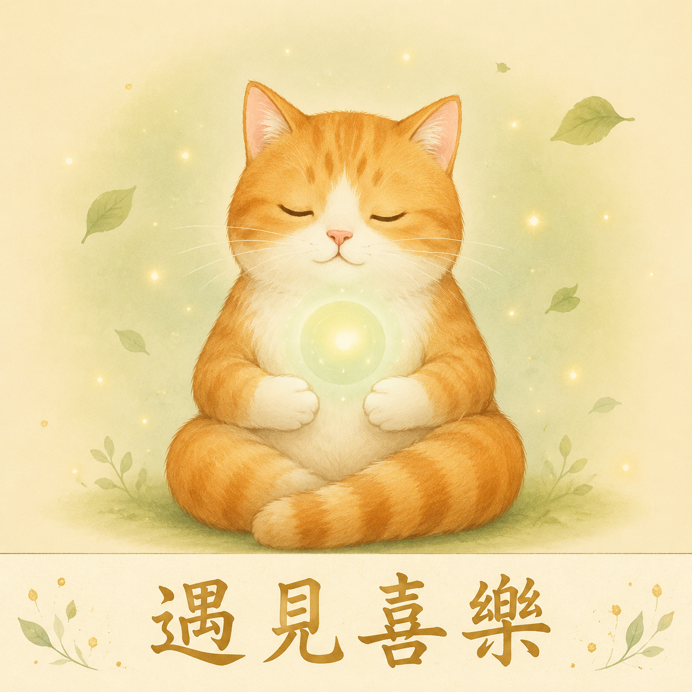

給自己兩分鐘。
戴上耳機效果更好。按下開始，跟著教練的聲音和圓圈，一起好好呼吸。
當我們壓力大、焦慮的時候，身體會進入「緊繃」狀態，這時候特別容易想吃東西——尤其是甜的、鹹的、油的（這就是「壓力性進食」）。
深呼吸，尤其是把吐氣拉長，能幫助身體從緊繃切換到放鬆，讓那股「想亂吃」的衝動慢慢平息。下次感覺壓力上來、很想衝去找零食時，先做幾次深呼吸，很多時候那個衝動就過去了。
任何時候都可以——想吃零食前、心情煩躁時、睡前想放鬆時，或只是想給自己一點喘息的空間。
把這一頁加到手機書籤，需要的時候隨時打開，跟著呼吸幾次。這是你隨身的小小放鬆角落。💛